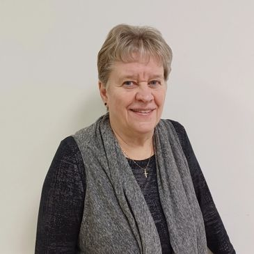
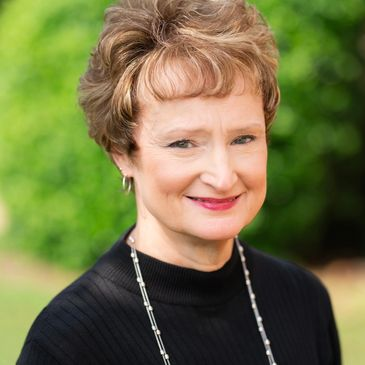
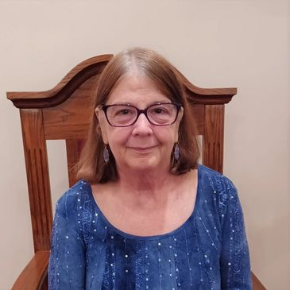
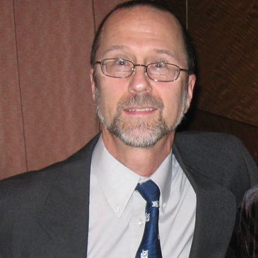
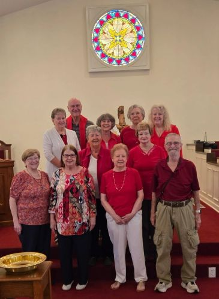

Staff

Pastor Doreen Gibbons - Lead Pastor
Doreen was born and raised and lived most of her life in Thomaston, Connecticut. She was ordained in 2011 with Evangelical Association of Reformed and Congregational Christian Churches. Doreen and her husband Greg felt God leading them to North Carolina in 2014, after praying for His direction and plan. Doreen strives to always live in God’s will, follow His plan and trust that He is in control – knowing it’s not easy, but it is possible. They currently live in Whitsett.

Beverly Alt - Music Director
Beverly has extensive experience as a Church Musician. She has been music director and accompanist for area churches and feels blessed to be able to serve as Music Director at Pleasant Ridge Christian Church. Beverly is a graduate of Brevard College (AFA) and the University of North Carolina at Greensboro (BM, MM). She is Nationally Board Certified in Music/Early Adolescence through Young Adulthood. Beverly lives with her husband Pete in Northwest Guilford County.

Kate McIver - Pianist
A native Texan, Kate is an experienced pianist who has accompanied ballet classes, musical theater, school choirs, and church choirs/congregations. She feels enormously blessed for the opportunity to help the Pleasant Ridge congregation worship through music. Kate is also a former English teacher, and in her spare time, she enjoys creative writing. She lives in Greensboro
Ray Freeman - Deacons Leader

Greg Gibbons - Leader of Prayer Ministry
